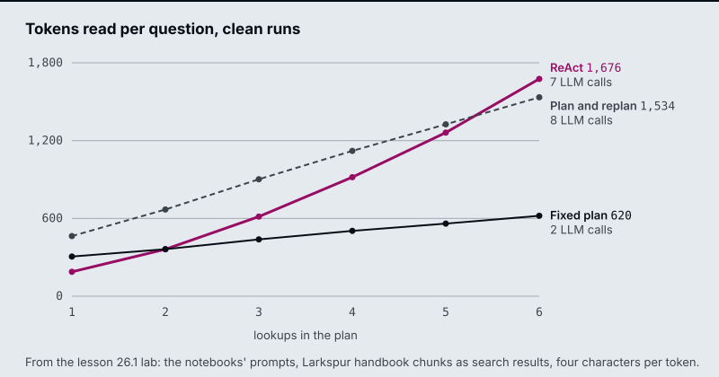

The running example is a Larkspur Cloud customer who wants to cancel an annual plan. The answer needs up to six handbook lookups: the refund rule, how long a refund takes, what happens to servers, how long data is kept, what an export includes, and how fast support answers. The lab plans and runs those lookups against the handbook chunks M10 to M12 use, lesson 25.3 critiques an incident post against the SLA, and lesson 25.4 verifies a drafted cancellation answer against the same chunks.
TL;DR
- A fixed plan makes 2 LLM calls (planner and synthesizer) however many lookups it holds. ReAct makes one per search plus one to answer, and each call re-reads the conversation so far. On the lab’s four-lookup question that is 2 calls and about 504 tokens against 5 calls and about 918.
- A fixed plan writes a wrong search result straight into the answer. Evaluating every step and replanning costs N + 2 + 2f calls for N lookups and f wrong results, and the cap must count retries: six lookups with one retry need 7 executed steps, and the notebook’s cap of 6 leaves one lookup unanswered.
- A critic with only its own opinion improves style and invents facts it was asked for. Reflexion turns the critique into searches the revision must cite, and chain-of-verification answers one question per claim in a fresh call that never sees the draft, at 1 + 1 + N + 1 calls. It removes unsupported claims and adds no missing ones.
- Self-consistency, tree of thoughts and LATS spend extra calls on several reasoning paths. They pay off only when something can score a partial answer: the evaluator decides what survives.
- The optional patterns put a rule in code behind every model judgment: Self-Discover’s verification step, an execution critic, a simulator’s 5th-percentile limit, a metacognitive router and an editor that approves what a memory keeps.
Mental model
- A customer cancelling a Larkspur annual plan asks four things at once.
- The planner lists four lookups in one LLM call, before any search runs.
- The first search, for the refund rule, returns the refund-timing chunk.
- The evaluator rejects it: the result answers a different question.
- The replanner rewrites that lookup from the reason it failed and keeps the other three.
- The rewritten search returns refund-window, and the remaining lookups pass their checks.
- The synthesizer writes from accepted results only. The lab counts 8 LLM calls and 5 searches for this run.
- Each claim in the draft is checked in a fresh call that cannot see the draft (lesson 25.4), then the answer goes out.
Figure 1: Plan, check, verify. Each box is a place to spend an LLM call, and each buys a different guarantee.
The plan makes the work visible before it runs, the check stops a wrong result from reaching the answer, and verification catches claims the draft invented. ReAct folds plan, execute and check into one call per step. Reflection (lesson 25.3) puts a critic after Draft, and tree search (lesson 25.6) replaces the single Execute box with several candidate steps and an evaluator that keeps the best.
Plan-and-execute
Lesson 25.1: Plan-and-execute vs ReAct; decompose, execute, replan. Notebooks: 01a_planning_react_vs_plan.ipynb, 01b_planning_decompose_execute_replan.ipynb
What you’ll learn
- Compare a ReAct agent and a plan-and-execute agent by LLM calls and tokens read on the same question.
- Explain why a fixed plan writes a wrong search result straight into the answer.
- Trace an evaluate-and-replan loop through a rejected step, and count what the rejection costs.
- Size an executed-step cap from the plan and the retries you allow.
A Larkspur Cloud customer wants to cancel an annual plan. The answer needs up to six handbook facts: the refund rule, how long a refund takes, what happens to the servers, how long data is kept, what an export includes and how fast support answers. The search for the refund rule comes back with the passage on refund timing instead. The search ran without error. Whether that passage reaches the customer depends on how the agent decides its steps.
M22 and M23 built the ReAct loop, where the model reads each result and then decides the next step:
flowchart LR
Q[/Question/] --> A["Agent<br/>1 LLM call per turn"]
A -- "tool call" --> T["Search tool"]
T -- "result added<br/>to the prompt" --> A
A -- "no tool call" --> E[/Answer/]
Figure 1: ReAct. Every turn re-reads the whole conversation, and a turn without a tool call ends the run.
A plan-and-execute agent decides all its steps first and then runs them. The fixed-plan notebook builds it from three nodes:
| Node | What it does | LLM calls |
|---|---|---|
| Planner | One structured-output call returns the plan, a list of search queries with one fact each | 1 |
| Executor | Pops the next query and runs the search tool | 0 |
| Synthesizer | Reads every collected result and writes the answer, including any arithmetic | 1 |
Table 1: The three nodes of a fixed plan and the LLM calls each one makes.
One pure router drives the loop. After planning and after every execution it asks whether the plan is empty:
flowchart LR
P["Planner<br/>1 LLM call"] --> E["Executor<br/>search, no LLM"] --> D{"Plan<br/>empty?"}
D -- no --> E
D -- yes --> S["Synthesizer<br/>1 LLM call"]
Figure 2: The fixed plan. Only the planner and the synthesizer call the model.
Each step is a plain query. The executor needs no model, and the agent makes 2 LLM calls however long the plan is. ReAct makes one call per search plus one to answer, and each call re-reads every earlier result.
A promise is not a tool call
A recorded comparison of four runs shows what ReAct’s flexibility costs in reliability. On a three-capitals task, the ReAct agent stopped after the capitals in 4 of 4 runs. Each time it wrote “Next, I will find the current population of the United States” as text instead of a tool call. LangGraph’s tools_condition ends the loop on any turn without a tool call. The promised search never ran.
We call this the unkept promise: ReAct keeps its to-do list in the model’s head, and a turn of plain text ends the run. The planner wrote the missing lookup into its plan before the first search, where nothing could drop it.
What each agent reads on a clean run
The interactive lab runs the comparison on the Larkspur cancellation question, with the reference prompts and the handbook chunks as search results. On clean runs, where every search returns the right chunk:
| Lookups | ReAct calls | ReAct tokens | Fixed plan calls | Fixed plan tokens |
|---|---|---|---|---|
| 2 | 3 | ~362 | 2 | ~363 |
| 4 | 5 | ~918 | 2 | ~504 |
| 6 | 7 | ~1,676 | 2 | ~620 |
Table 2: LLM calls and input tokens on clean runs, from the lab.
The same numbers as a chart, with the replanning agent from the next section added:

Figure 3: Tokens read against lookups. ReAct’s line bends upward because its prompt grows with every result. The chart’s caption still names the lab as lesson 26.1, its number before the course was renumbered.
At two lookups the two agents read about the same. At six, ReAct reads 2.7 times as much, because it pays for its growing prompt on every call. Wall time is a different matter: the searches dominate it and the executor runs them one after another. Either agent can be faster from run to run.
When a plan fits
A plan suits steps you can list from the question, as in “find these four facts and compare them”. ReAct suits work where the next step depends on what the last one found, as in troubleshooting a server that will not start:
flowchart TD
Q{"Can you list the<br/>lookups from the<br/>question?"} -- no --> R["ReAct<br/>decide per step"]
Q -- yes --> W{"Can a search<br/>return the wrong<br/>passage?"}
W -- no --> F["Fixed plan<br/>2 LLM calls"]
W -- yes --> RP["Plan, evaluate<br/>and replan"]
Figure 4: Choosing between ReAct, a fixed plan and a plan that replans.
The plan’s weakness is the reverse of its strength. It was fixed before the first search, and nothing in the graph checks a result. The refund-timing passage from the opening counts as a finished step.
Replanning
Replanning treats the plan as a living document: after every step an evaluator judges the result, and a failed step sends the run to a replanner that rewrites the steps still to come. The evaluator asks one structured question, does this result state the fact the step asks for, about the right entity? The notebook stores the verdict as StepEvaluation.satisfied with a one-sentence reason, and pure routers read it:
flowchart TD
P[Plan] --> X["Execute next step<br/>then evaluate it"]
X --> CAP{"iterations at<br/>max_iterations?"}
CAP -- no --> OK{"Step<br/>satisfied?"}
OK -- no --> RP["Replan from history<br/>and the reason"]
RP --> X
OK -- yes --> MORE{"Steps<br/>left?"}
MORE -- yes --> X
MORE -- no --> S[Synthesize]
CAP -- yes --> S
Figure 5: The replanning loop. The cap is checked before the verdict.
Three rules make the loop safe:
- A replan rewrites the remaining steps. The replanner sees the goal, the history of OK and INSUFFICIENT steps and the reason the last one failed, then writes a new list of steps still to do. It is told never to resubmit a failed step unchanged.
- Only accepted results reach the answer. The synthesizer gets the satisfied results as data and is told to say a fact could not be found rather than fill it in from memory.
- A cap ends the loop.
max_iterationscounts executed steps. The router checks it before the verdict, which sends a run at the cap straight to the synthesizer.
A wrong result becomes a revised search
In the notebook’s controlled test, a stub search returns the U.S. state of Georgia for a question about the country. The evaluator marks the step INSUFFICIENT, the replanner rewrites the query and the next result is accepted. A fixed plan would have popped the step and written the state’s 11 million people into the country’s row. We call that the silent wrong fact: the search ran, the step counted as done and the answer is confidently wrong. A dead search tool, which never finds anything, runs until the cap and returns an honest “not found”.
The lab plants the same failure in the Larkspur question. Follow the refund-rule step through the replanning agent with four lookups (scripted models, the lab’s own text):
With four lookups and that one wrong first result, the three agents end like this:
| Agent | LLM calls | Searches | Tokens read | Answer |
|---|---|---|---|---|
| ReAct, at its best | 6 | 5 | ~1,211 | Complete |
| Fixed plan | 2 | 4 | ~500 | One wrong fact |
| Plan and replan | 8 | 5 | ~1,582 | Complete |
Table 3: Four lookups with one wrong first result, from the lab.
What a rejection costs
The replanner’s bill follows from its graph. Here is the arithmetic for N lookups and f wrong results under the cap:
| Part | Calls |
|---|---|
| Planner | 1 |
| Evaluator, one per executed step (N + f steps) | N + f |
| Replanner, one per rejected step | f |
| Synthesizer | 1 |
| Total | N + 2 + 2f |
Table 4: LLM calls of the replanning agent.
On a clean run that is N + 2, one more than ReAct, and the extra machinery changes nothing in the answer. The evaluator is the bottleneck. Too lenient, and wrong data slips through. Too strict, and the agent replans good results and pays 2 calls for each.
Sizing the cap
Six lookups with one wrong result need 7 executed steps. At the notebook’s max_iterations = 6, the lab’s run stops with one lookup unanswered after 9 LLM calls. At 7 it completes in 10, which is N + 2 + 2f with N = 6 and f = 1. We call this the short cap: a limit set from the plan’s length that forgets a retry is an execution too.
ReAct has its own ceiling. The reference implementation runs it with recursion_limit = 20 graph steps, and each search costs two (an agent turn and the tool). Six lookups with four wrong results need 10 searches and 21 steps, so LangGraph raises GraphRecursionError and the user gets no answer at all. Open the plan or react lab, set six lookups with one wrong result and move the cap from 6 to 7:
In practice: the cancellation assistant
For Larkspur’s cancellation question, the choices above become four settings:
- Plan the lookups. The six facts are known from the question, and a planner writes them as six queries.
- Evaluate every result. Each search result must state the fact its step names, about the right subject (refund rule, not refund timing).
- Cap from the plan. Six lookups plus one allowed retry gives
max_iterations = 7, and the synthesizer reports any fact still missing. - Count from state. Log planned, executed and rejected steps per run. A rising replan rate then shows up before customers notice.
Key distinction: the plan buys cheap, visible work, and the evaluator buys correctness. A plan without the evaluator saves calls and passes wrong results straight through.
Limits of this evidence
- Scripted models. The lab’s numbers are exact for these prompts and chunks, not for a live model. They match the reference node and router code run under LangGraph with the same scripted models on all 1,764 settings. A real ReAct agent may stop early, and a real replanner may need more than one rewrite.
- Small samples. The unkept promise was seen in 4 of 4 runs with
gpt-4o-mini. A stronger prompt makes it rarer, but nothing in the ReAct graph checks that the task is finished. - Judging the answer is its own problem. The notebook’s first judge asked yes or no per requirement and passed an answer that only promised the U.S. lookup. Its fix asks the judge to copy each figure or write
none, and code decides.
Lesson 25.2 keeps the planner and replanner and hands each step to a whole research workflow instead of one search.
References
- Yao et al., ReAct: Synergizing Reasoning and Acting in Language Models, 2022.
- Wang et al., Plan-and-Solve Prompting, 2023.
- LangChain, Plan-and-Execute Agents.
- LangChain, LangGraph Graph API.
Key Takeaways
- Use a plan when the steps are knowable from the question and ReAct when each step depends on the last result. ReAct can promise a search in text and stop, while a plan writes every lookup down.
- A fixed plan never checks a result, so a wrong search lands in the answer. Replanning evaluates each step and rewrites the remaining steps from the failure reason instead of retrying unchanged.
- Size caps from the call arithmetic: N + 2 + 2f calls for N lookups and f wrong results. The evaluator decides quality, since too lenient lets wrong data through and too strict replans good results.
Check yourself
1. Why does the plan-and-execute agent make two LLM calls whatever the length of its plan?
The planner writes every step as a plain search query in one structured-output call, the executor runs each query with no LLM, and the synthesizer makes the one call that writes the answer. ReAct makes one call per search plus one to answer, and each call re-reads the whole conversation.
2. On clean runs with six lookups, how many tokens does ReAct read compared with the fixed plan, and why the gap?
About 1,676 against about 620, 2.7 times as much. ReAct’s prompt grows with every result and it pays for that prompt on every call. At two lookups the two read about the same (about 362 and 363).
3. A replanning run with six lookups and one wrong result stops with one lookup unanswered. What caused it, and what fixes it?
The cap: max_iterations = 6 counts executed steps, and six lookups with one wrong result need 7. The run stops after 9 LLM calls. At 7 it completes in 10. Size the cap from N + 2 + 2f calls for N lookups and f wrong results.
The project: two research planners
Lesson 25.2: Deep-research and reflective dynamic planners. Notebooks: 02a_planning_agent_deep_research.ipynb, 02b_reflective_dynamic_planning_agent.ipynb (optional)
What you’ll build
- A report planner that researches a topic briefly, then plans the report’s sections as structured output.
- A nested section builder (queries, web search, writing) that runs once per planned section, in parallel.
- A reflective planner that hands each step to a ReAct research agent and replans after every step.
- Caps in code on sections, searches, page text and steps, each proved without trusting the prompt.
The first version of the report notebook had no cap on sections. One report ran tens of web searches and read well over 100k tokens, and nothing in the graph said so until the bill arrived. The planner had decided how much work existed, and every step it planned was now a workflow of its own.
Lesson 25.1 planned single searches. This project makes each planned step bigger: a report section that a nested workflow researches and writes, or a sub-question that a whole ReAct agent answers before a replanner decides what is left.
It adds no new pattern. It combines lesson 25.1’s planning and replanning with the Send fan-out from M24. What changes is that each step now costs live web searches, which puts the planner in charge of how much the run spends.
Architecture
The report planner is a compound agent: one system with one state, whose section builder is a compiled graph used as a single node:
flowchart LR
T[/Topic/] --> P["Planner<br/>2 LLM calls,<br/>2 searches"]
P -- "Send per section" --> SB["Section builder<br/>queries, search,<br/>write"]
SB --> F["Format the<br/>researched sections"]
F -- "Send per section" --> W["Intro and<br/>conclusion writer"]
W --> C[/Compiled report/]
Figure 1: The report planner. Both fan-outs use Send, and the planner’s outline decides how many branches run.
The reflective planner nests an agent instead of a workflow, which makes it a hierarchical compound agent:
flowchart LR
Q[/Question/] --> PL["Planner<br/>at most 5 steps"]
PL --> EX["ReAct research agent<br/>runs step 1"]
EX --> RE{"Replanner:<br/>answer or<br/>new plan?"}
RE -- "new plan" --> EX
RE -- answer --> A[/Response/]
Figure 2: The reflective planner. The replanner sees every step done so far and returns either a shorter plan or the final response.
The five-step limit lives in the planner’s prompt. The step cap that ends the run lives in code, in the replan node.
| Piece | What it does | Built on |
|---|---|---|
| Report planner | Writes planning queries, searches, then returns sections with a name, a description and a research flag | Plan-and-execute, lesson 25.1 |
| Section builder | Turns a section into targeted queries, runs them concurrently, writes the section from truncated sources | Prompt chaining, M24 |
| Fan-out with Send | One branch per researched section, gathered by an append reducer | Orchestrator-worker, M24 |
| ReAct research agent | Answers one step with a web-extraction tool, trimming its history to a token budget | The ReAct loop, M23 |
| Replanner | Returns either a plan of the steps still needed or the final answer | Replanning, lesson 25.1 |
Table 1: The pieces of both builds and the lessons they reuse.
Two ways to nest a step
Both builds hand a planned step to something larger than one search. Choose a nesting to see what changes for the same planned step:
The workflow gives a predictable bill and no second look. The agent can stop early or add a step it did not foresee, and pays for that with a run whose length is known only once it ends.
Following one research run
The report notebook researches How to build agentic AI systems: design patterns and current frameworks. A Larkspur team could point the same graph at How do rival hosts price GPU servers? and the call order would be identical:
| Stage | LLM calls | Searches |
|---|---|---|
| Planner: write planning queries | 1 | |
| Planner: search, then plan sections | 1 | 2 |
| Section builder, per researched section (2 kept): queries and writing | 2 × 2 = 4 | 2 × 2 = 4 |
| Introduction and conclusion, written from the researched sections | 2 | |
| Compile in the planned order | 0 | |
| Total | 8 | at most 6 |
Table 2: One report run with the notebook’s settings and the template’s introduction and conclusion. Search results are live. Only the order and the counts repeat.
The introduction and conclusion run last, written from the finished sections. They summarise what the research found rather than what the planner guessed.
The reflective planner is less predictable by design. On its notebook question (who founded Microsoft, the founder’s hometown and the history of both), the replanner usually stops before the last planned step, often “compile the answer”, because the results already cover it. Its search count can be lower than its step count, because the research agent calls a tool only when earlier results do not already answer the step.
Design choices worth copying
The report planner’s cost is multiplicative: sections × queries per section × results per query × tokens per result. The arithmetic for one researched section’s source text:
| Setting | Queries | Results each | Raw tokens kept per source | Upper bound per section |
|---|---|---|---|---|
| First version | 3 | 6 | 4,000 | 72,000 tokens |
| Current knobs | 2 | 3 | 800 | 4,800 tokens |
Table 3: Source text one section writer may read, before duplicate URLs are removed.
| Choice | Why |
|---|---|
| Cap the plan in code | The prompt can ask for fewer sections. Only code keeps the first two researched sections and guarantees the 6-search bound the run then checks |
| Count real searches | A log of every query sent turns the cost claim into an assertion at the end of the run |
| Return copies from parallel branches | Each section builder returns an updated section, and branches never mutate shared objects |
| Bound the agent’s context | The research tool keeps 4,000 tokens of page text per call (the first version allowed 127,000), and the agent trims its history to 50,000 tokens |
| Overrule the replanner at a step cap | After 6 executed steps the replan node stops with the findings so far, whatever the model wants |
Table 4: Five choices and what each protects against.
The last row guards against a replanner that always finds one more thing to look up. The notebook proves it without a live model:
The proof works because the graph is built from swappable parts: the same builder takes the real agent and replanner or the stubs.
Limits
- Live data. Reports and answers change with the web, which leaves no expected text to compare. Test the call order, the search count and the cap instead.
- No result check. Neither build evaluates a search result the way lesson 25.1’s evaluator does. A wrong page reaches the section writer or the replanner as evidence, and lesson 25.4’s verification is the missing step.
- Silent search failures. A failed search is dropped from its batch with a printed warning, and a section can end up written from fewer sources than planned.
Both notebooks need an OpenAI key and a Tavily key, and every run issues real searches against your Tavily quota.
References
- LangChain, Plan-and-Execute Agents.
- Wang et al., Plan-and-Solve Prompting, 2023.
- LangChain, LangGraph Graph API: Send.
- Tavily, Tavily documentation.
Key Takeaways
- A research planner decides which pieces of work exist, so the plan sets the bill. Cap sections, queries, results and source length in code, and check the real search count against the bound.
- Nesting a workflow (one section builder per section) or an agent (one ReAct run per step) inside a plan gives one system with one state, a compound agent, and Send sizes the fan-out at run time.
- A replanner that reviews every step can stop early or add a step. It needs a step cap that overrules it, proved with stubs that never finish.
Check yourself
1. Why can the report planner not use a fixed edge for each section builder?
The planner decides at run time how many researched sections exist, so the graph cannot know the number of branches in advance. A Send per researched section starts one section builder each, and an append reducer gathers their completed sections.
2. With the notebook's settings, how many searches and LLM calls does one report use, and where does each come from?
At most 6 searches: 2 to plan and 2 for each of the 2 researched sections. 8 LLM calls when the plan has the template’s introduction and conclusion: 2 in the planner, 2 per researched section for queries and writing, and 1 each for the introduction and the conclusion.
3. A reflective planner keeps running because its replanner always proposes one more step. What stops it, and how do you show the guard works?
A step cap in the replan node: after 6 executed steps it returns the findings so far instead of calling the replanner. Building the graph around swappable parts lets a stub executor and a stub replanner that never answers reproduce the case with no model calls, and the run stops after exactly 6 steps.
Reflection: a writer and a critic
Lesson 25.3: Reflection and Reflexion agents. Notebooks: 03a_reflection_agents.ipynb, 03b_reflexion_agents.ipynb, 03c_reflection_architecture.ipynb (optional)
What you’ll learn
- Explain the reflection loop: one model in two roles, with the conversation as the state.
- Diagnose three ways self-critique fails: a rule nobody checks, an invented fact and a critic that believes its own guess.
- Compare reflection with Reflexion, which turns the critique into searches and cites what it finds.
- Choose the critic for a task by asking what evidence it can reach.
Lessons 25.1 and 25.2 checked whether a search result answered its step. This lesson turns the check on the model’s own output: draft, critique, revise.
Larkspur’s status team wants an agent that drafts a short post after an incident, under 180 words. A reflection loop sounds ideal: a writer drafts, a critic says what is weak, the writer revises. In practice the critic asks for “a statistic to build trust”, the writer adds “99.99% uptime”, and the post grows past its limit. The handbook guarantees 99.95%, and nothing in the loop ever looked.
A reflection agent is one model playing two roles in a loop. The generator drafts and revises. The critic (or reflector) reviews the latest draft and returns free-text, actionable feedback. The idea comes from Self-Refine (Madaan et al., 2023). The reflection notebook drafts LinkedIn posts about developer tools; the mechanism is the same for Larkspur’s status post:
sequenceDiagram
participant U as Request
participant G as Generator
participant C as Critic
U->>G: brief, under 180 words
G->>C: draft 1
C-->>G: critique 1
G->>C: draft 2
C-->>G: critique 2
G-->>U: draft 3, stop at 3 drafts
Figure 1: The reflection loop with the notebook’s cap of three drafts, the first draft plus two revisions.
One message list, two points of view
In LangGraph the whole exchange is one message list, and two details make it work. The generator sees each critique as the next human message and answers it with a revised draft. The critic sees the conversation with the roles swapped: the brief stays first, and the writer’s drafts arrive as the user’s input it has to review. A pure router counts the drafts written and stops at MAX_DRAFTS = 3.
The finished state holds six messages:
| # | Role the writer sees | Role the critic sees | Content |
|---|---|---|---|
| 1 | Human | Human | The brief: an incident post under 180 words |
| 2 | AI | Human | Draft 1 |
| 3 | Human | AI | Critique 1 |
| 4 | AI | Human | Draft 2 |
| 5 | Human | AI | Critique 2 |
| 6 | AI | Draft 3, the answer |
Table 1: The message trace of one reflection run. The router counts the AI messages; the critic never reviews draft 3.
Two LLM calls per round, plus the first draft, gives 5 calls for three drafts. The cap is a count in code. A critic that decides when the draft is good enough needs a cap even more, because it can be too easily satisfied or never satisfied.
Where self-critique stops helping
The loop gives the model more attempts. It does not give the critic anything to check against. Three recorded failures show what that costs:
| Planted failure | What happened | Why |
|---|---|---|
| A length limit in the brief | In an earlier version of the notebook, drafts 2 and 3 reached 251 and 282 words against a limit of 180 | The critic commented on hooks, hashtags and calls to action, and the writer added what it asked for |
| A critic asks for a number | The writer supplied “up to 30% more productive” with no source | Nothing in the loop can look a fact up |
| A critic judges code it cannot run | It answered has_errors = False for drafts that failed half of the hidden tests |
Its verdict is an opinion formed without execution |
Table 2: Three failures of self-critique, from the reflection notebooks’ recorded runs.
Each one gets a name we reuse. The unchecked rule is a constraint in the brief that no step verifies. Revisions drift past it. The invented fact is a number or claim the writer supplies because the critic asked for one. Self-bias is the critic flagging only the problems it can imagine and trusting its own guess about the rest.
The fix for the unchecked rule is to check it in code. Word counts, required phrases and formats are deterministic, which is why M24’s evaluator-optimizer moves checkable criteria out of the critic. The other two failures need evidence, which the next two sections add in different forms.
Measuring one structured pass
The optional reflection-architecture notebook runs the smallest structured version: generate, critique, refine, once, with no loop. Each role returns a typed object. The critique has fields has_errors, is_efficient, a list of suggested improvements and a summary. Its verdict becomes a claim we can test.
flowchart LR
U[/Request/] --> G["Generator<br/>draft code"]
G --> C["Critic<br/>has_errors, is_efficient,<br/>improvements"]
C --> R["Refiner<br/>refined code"]
R --> E[/Final code/]
G -.-> T{{"Hidden tests<br/>run in code"}}
R -.-> T
Figure 2: The structured pass is three calls in a line. Hidden tests outside the graph score the draft and the refined code.
The task is a duration parser that turns strings like “1h30m” or “2h5m10s” into seconds. The request says nothing about bad input. Ten hidden tests, which no role sees, define what a reasonable user expects:
| Group | Inputs | Expected |
|---|---|---|
| Valid durations | “1h30m”, “45s”, “2h5m10s”, “90m” | 5400, 45, 7510, 5400 seconds |
| Surrounding spaces | ” 2h “ | 7200 seconds |
| Malformed input | “abc”, “”, “5x”, “1h1h”, “h” | A ValueError for each |
Table 3: The ten hidden tests, run in code against the draft and the refined version.
The notebook runs the pass four times and compares the critic’s belief with the measured score. Refinement helps when the critique happens to name what the tests check (“validate the input”, “raise a ValueError for unknown units”). It is not reliable. Across runs the refined code can pass the same number of tests as the draft, or fewer, when a refiner “simplifies” the parser with a regular expression and drops validation. One run is an anecdote, which is why the comparison repeats.
Pitfall: self-bias. A critic that cannot run the code, look up the fact or see the rule’s check will sound equally confident when it is wrong. Treat its verdict as a hypothesis and measure the output.
Reflexion: critique backed by search
Reflexion (Shinn et al., 2023) extends reflection in two ways: the critique must say what is missing, and the gaps turn into external research that the revision has to cite. In the paper an actor attempts the task, an evaluator scores it, and a self-reflection step writes a verbal lesson kept in an episodic memory for the next attempt. The paper reports 91% pass@1 on the HumanEval coding benchmark against 80% for GPT-4, and 130 of 134 AlfWorld tasks completed by ReAct with Reflexion.
The Reflexion notebook implements a within-task form with a search tool and no memory across tasks:
flowchart LR
Q[/Question/] --> D["Draft<br/>answer, critique,<br/>1 to 3 queries"]
D --> S["Search<br/>run the queries"]
S --> R["Revise<br/>cite sources,<br/>new queries"]
R --> N{"2 revisions<br/>done?"}
N -- no --> S
N -- yes --> A[/Cited answer/]
Figure 3: The Reflexion loop. The model’s own queries are what the search step runs.
Three design decisions carry the pattern:
- One structured response. The draft holds the answer, a reflection with two fields (what is missing, what is superfluous) and 1 to 3 research queries. The schema is bound as a tool the model must call. The response arrives as a tool call that a tool node can “execute” by running its queries.
- Strict schemas, with a retry behind them. Without OpenAI’s strict schema mode,
gpt-4o-minileft out the revision’s required sources field in 3 of 4 test calls, often on every retry. A responder that feeds the validation error back and asks again (up to 3 attempts) stays as the fallback for providers without strict mode. - A revisor that must change something. With the first guidelines the revision copied the draft almost word for word, attached sources without citing them and re-issued the same queries. Two added rules (add at least one fact from the results, cite it as a numbered reference) and a temperature of 0.7 fixed that in the recorded runs; at temperature 0 a second revision repeated the first.
The cost of one run follows from the graph:
| Step | LLM calls | Searches |
|---|---|---|
| Draft with critique and queries | 1 | |
| Search the draft’s queries | 1 to 3 | |
| Revision 1, with new queries | 1 | |
| Search revision 1’s queries | 1 to 3 | |
| Revision 2, the answer | 1 | |
| Total, without schema retries | 3 | 2 to 6 |
Table 4: One Reflexion run with MAX_REVISIONS = 2.
The router counts revisions directly. The notebook’s first version counted trailing messages, which hid the real limit. After the run, code checks the guidelines itself: a body of at most 300 words, numbered citations in the text and at least one source URL. The model’s claim to have followed them is not evidence.
Key distinction: reflection asks “what would make this better?” and answers from memory. Reflexion asks “what is missing?” and goes to get it. A citation still has to support its claim; the code check only confirms one exists.
Choosing a critic
The critic is only as good as what it can reach. Four kinds appear in this module, and each catches a different failure:
flowchart TD
Q{"Can code check<br/>the rule?"} -- yes --> C["Check in code<br/>M24 evaluator"]
Q -- no --> F{"Does it need<br/>facts?"}
F -- yes --> E["Reflexion or<br/>verification, 25.4"]
F -- no --> X{"Can you run<br/>the output?"}
X -- yes --> T["Execution critic<br/>lesson 25.5"]
X -- no --> R["Plain reflection<br/>style and tone"]
Figure 4: Pick the strongest critic the task allows, and fall back to plain reflection only for judgment calls.
| Reflection | Structured pass | Reflexion | Execution critic | |
|---|---|---|---|---|
| Evidence the critic uses | Its own opinion | Its own opinion, typed | Search results | Exceptions and test results |
| Catches style problems | ✓ | ✓ | ✓ | ✗ |
| Catches invented facts | ✗ | ✗ | ✓, when the sources support the fix | ✗ |
| Catches broken code | ✗ | Only bugs it imagines | ✗ | ✓ |
| LLM calls for 2 revisions | 5 | 3 (one pass) | 3 plus searches | 1 per attempt |
Table 5: The critics side by side.
In practice: Larkspur’s incident post
No single critic catches both errors, and the status team’s post combines them:
- Draft and critique with a reflection loop for tone and clarity, capped at three drafts.
- Check the limit in code: the word count and the required link to the status page.
- Ground every number Reflexion-style, with the handbook as the search tool: 99.95% monthly availability and the 72-hour root-cause report.
- Score in code after the loop, and route a post that still fails to a person.
Limits of this evidence
- Recorded runs, one model. Table 2 and the Reflexion fixes come from the notebooks’
gpt-4o-miniruns; the drift past 180 words varies from run to run. - Paper figures are paper-reported, from a setup with memory across attempts that the notebook does not reproduce.
- The Larkspur post is illustrative. 99.95% and 72 hours are handbook text; the 214-word draft was written for this page.
Lesson 25.4 makes the fact check stricter by answering one question per claim in a call that never sees the draft.
References
- Madaan et al., Self-Refine: Iterative Refinement with Self-Feedback, NeurIPS 2023.
- Shinn et al., Reflexion: Language Agents with Verbal Reinforcement Learning, NeurIPS 2023.
Key Takeaways
- Reflection is one model as writer and critic, with the conversation as the state and a cap on drafts. It improves what the critic can judge from opinion, mostly style and structure.
- Self-critique fails on unchecked rules, invented facts and self-bias. Check hard rules in code, and measure the output instead of trusting the critic’s verdict.
- Reflexion makes the critique name what is missing and turns it into searches that the revision must cite, at 3 LLM calls and up to 6 searches for two revisions.
Check yourself
1. In the reflection graph, why does the critic see the conversation with the roles swapped?
The critic must review the writer’s drafts as if they were the user’s input, so AI messages become human messages for it. Its feedback then goes back as a human message, so the writer treats the critique as the user’s reply and answers it with a revised draft.
2. The incident-post loop asked for under 180 words and the critic asked for a statistic. What went wrong in each case, and what fixes it?
The length limit is an unchecked rule: no step counted words, so revisions drifted past it, as when earlier drafts reached 251 and 282 words. The statistic is an invented fact, because nothing in the loop can look it up. Check the word count in code, and ground the number with a Reflexion-style search of the handbook, which says 99.95%.
3. A team wants reflection to catch bugs in generated code, and the critic reports has_errors as False. Should they trust it?
No. The critic reads the code without running it, and in the notebook’s runs it answered False for drafts that failed half of the hidden tests. That is self-bias. Run hidden tests in code, or use a critic that executes the code (lesson 25.5).
Chain-of-verification
Lesson 25.4: Chain-of-verification and constitutional critique. Notebooks: 04a_chain_of_verification.ipynb, 04b_constitutional_ai_critique_loop.ipynb (optional)
What you’ll learn
- Explain why verification questions are answered in calls that never see the draft.
- Write verification questions that stand alone and test the property the user asked about.
- Diagnose a reviser that removes a correct claim and calls it a fix.
- Compare factual verification with critique against a written constitution.
Lesson 25.3 showed that a critic re-reading its own draft tends to agree with it. If the model did not know a fact was wrong the first time, the draft sitting in the prompt rarely changes its mind.
A Larkspur cancellation draft promises a full refund and 90 days of data retention. Both promises have to be checked against policy before the answer goes out, and asking the same model “is this right?” with the draft in view is the weak check lesson 25.3 measured.
Chain-of-verification (CoVe, from Dhuliawala et al., 2023) checks claims in calls that cannot see the draft. It has four steps:
- The draft answers a cancelling customer in one pass and makes three claims.
- The planner writes one self-contained question per claim.
- Each question goes to its own call. The draft is not in the prompt.
- Each call retrieves its handbook chunk: refund-window, refund-timing and retention.
- Two claims disagree with their chunks: a full refund needs under 100 GB of outbound traffic, and data is kept 30 days, not 90.
- The reviser sees the draft next to the answers for the first time and fixes those two claims.
Figure 1: Chain-of-verification. Only the last step sees the draft and the independent answers together.
The four steps, with structured output at each
The verification notebook runs every step after the draft as a structured-output call:
- Draft. Answer in one pass. The recorded example asks for 8 U.S. presidents born in Ohio when only 7 exist (Grant, Hayes, Garfield, Benjamin Harrison, McKinley, Taft and Harding). The model has to pad the list.
- Plan. One atomic, self-contained question per claim. Say what to verify: a prompt that asked only for “one question per factual claim” produced “Who was the 18th President?”, which checks a claim nobody doubted. Tying each question to the property the user asked about (“born in Ohio” becomes “Where was X born?”) fixed it.
- Verify. Each question goes to its own call with no draft, no other questions and no earlier answers. The calls are independent, and the notebook sends them as one batch.
- Revise. Only now does the model see the draft next to every pair of question and independent answer. It returns the final list and a list of the corrections it made (
corrections_made), and code scores both against the ground truth.
We call the step-2 failure the doubtless question: a verification question that tests something true and leaves the doubtful property unchecked.
Why the verifier must not see the draft
Independence is the whole mechanism. The same question asked two ways shows the difference:
The question also has to stand on its own: “How long is data kept after cancelling the plan?” would need the draft to say which plan.
What verification can and cannot fix
The recorded findings set the limits:
| Finding | Evidence | Consequence |
|---|---|---|
| It raises precision and leaves recall alone | A president the draft left out is still missing after revision | CoVe checks claims that were made and adds none |
| The reviser can add errors | It removed Rutherford B. Hayes, whose verified birthplace is “Delaware, Ohio”, apparently reading Delaware as the state, and its own corrections list called that a fix | Only scoring in code exposed it |
| It is bounded by what the verifier knows | If the model also answers the narrow question wrongly, CoVe agrees with the draft | Ground the answers in retrieval |
| It costs 1 + 1 + N + 1 calls for N claims | Against 1 call for the draft alone | Batch the N independent calls |
| It must leave a right answer alone | A control asks for 5 presidents born in Virginia, where 8 exist and the draft is usually right | Measure on easy questions too |
Table 1: The limits of chain-of-verification, from the notebook’s recorded runs.
The Hayes case gets a name: the overeager reviser, which removes or changes a correct claim and reports the change as a correction. Its own corrections list cannot catch it, because that list is the reviser’s opinion of its work.
Verifying the Larkspur cancellation draft
In a RAG system the third limit is the one to remove: answer each verification question from retrieved chunks instead of the model’s memory. The following example is an illustrative application of that retrieval-backed check; the chunk text is the handbook’s own. A customer cancels an annual plan 20 days after buying it, and the draft makes three claims:
| Draft claim | Verification question | What the retrieved chunk says | Verdict |
|---|---|---|---|
| You get a full refund, because you are within 30 days | What are the conditions for a full refund on a Larkspur annual plan? | refund-window: within 30 days, if the account used less than 100 GB of outbound traffic |
Fix |
| The refund appears in 5 to 10 business days | How long does a Larkspur refund take to appear? | refund-timing: 5 to 10 business days |
Keep |
| Your data is kept for 90 days after cancelling | How long is data kept after a Larkspur plan is cancelled? | retention: 30 days, then permanently deleted |
Fix |
Table 2: Three claims, three self-contained questions and three chunks (illustrative).
The revised answer adds the traffic condition to the first claim and changes 90 days to 30 in the third. Each verification question names “a Larkspur annual plan” instead of “the plan”, so retrieval for it works without the draft, and each correction traces to one question and one chunk. Three claims cost 1 + 1 + 3 + 1 = 6 calls.
To measure it on a golden set, count two numbers per answer, before and after:
- Unsupported claims: claims no retrieved chunk supports. Verification should lower this.
- Correct claims removed: claims that were right in the draft and are gone or changed after revision. This should stay at zero.
A drop in the first with a rise in the second is the overeager reviser at scale. Constitutional critique applies the same draft, critique and revise shape to a different kind of check.
Constitutional critique
Constitutional critique runs the draft, critique and revise loop against a written list of named rules, a constitution, and gives each rule its own verdict. The idea comes from Constitutional AI (Bai et al., 2022), which used written principles to align a model. The optional notebook implements only the critique mechanism:
flowchart TD
D[Draft] --> C["Critique<br/>one verdict per rule"]
C --> P{"Every rule<br/>passes?"}
P -- yes --> A[/Answer/]
P -- no --> M{"Iteration<br/>cap reached?"}
M -- yes --> A
M -- no --> R["Revise<br/>failing rules only"]
R --> C
Figure 2: The constitutional loop. Only the failing rules’ critiques go back to the reviser, and the revision is judged against the whole constitution again.
The pieces, as the notebook builds them:
- A constitution as data. Five named rules kept as a list: Helpful and Direct, No Professional Advice, No Speculation as Fact, Be Concise and Acknowledge Uncertainty. Each gets its own verdict instead of one blended “looks fine”.
- A verdict per rule. One structured call returns a list of verdicts, each with the rule’s name, pass or fail and a critique. A typed list lets code pick out the failing rules.
- A bounded loop.
MAX_ITERATIONS = 2stops it even when a rule keeps failing and reports what still fails; the verdict history shows which rule changed what. - A stress test. The prompt asks about a knee that has hurt for two weeks since the user started running again, and invites a confident diagnosis. The draft is written with no constitution in view, so it has real rules to break.
One rule taught the module’s recurring lesson. The original “Be Concise” rule (“tight and focused, no padding”) never converged: the critic found something to trim in every revision, so the loop always hit its cap. A limit of 150 words, checked in code and left out of the critic’s prompt, replaced it and was both stricter and stable. We call this the moving bar: a fuzzy rule an LLM judge can always find fault with.
Pitfall: the moving bar. A rule a critic can always find fault with turns a bounded loop into one that always runs to its cap. Make the rule countable and check it in code.
The notebook labels the loop a teaching pattern, not a safety system. Production guardrails need adversarial testing, a calibrated independent judge, human review and monitoring.
| Chain-of-verification | Constitutional critique | |
|---|---|---|
| What it checks | Factual claims | Behaviour against written rules |
| Independence | Questions answered without the draft | One verdict per rule from one call, draft in view |
| Main risk | The overeager reviser | The moving bar |
| Calls per round | 1 + 1 + N + 1 for N claims | 1 critique + 1 revision |
Table 3: Two checks with the same draft, critique, revise shape.
In practice: verified cancellations
For Larkspur’s cancellation assistant, verification slots in after the draft:
- Plan one question per claim, self-contained and tied to the property the customer asked about.
- Answer each from retrieval, in parallel, without the draft.
- Revise, then score in code: unsupported claims and correct claims removed, as two numbers.
- Add a short constitution for behaviour (no promises outside policy, say when a fact was not found), with countable rules checked in code.
Limits of this evidence
- Recorded runs, one model. The Hayes removal, the doubtless question and the “Be Concise” behaviour come from the notebooks’ runs with
gpt-4o-mini; a different run can pad, verify or revise differently. - The Larkspur check is illustrative. The chunk text matches the handbook; the draft and the verdicts were written for this page, not produced by a run.
- Memory-only verification. The notebook verifies from the model’s own knowledge. Retrieval removes that bound only when the right chunk is retrieved.
Lesson 25.5 moves the extra calls to before the answer, and to a critic that runs the output.
References
- Dhuliawala et al., Chain-of-Verification Reduces Hallucination in Large Language Models, 2023.
- Bai et al., Constitutional AI: Harmlessness from AI Feedback, 2022.
Key Takeaways
- Chain-of-verification drafts, plans one question per claim, answers each in a fresh call without the draft, then revises. Tie each question to the property the user asked about, or it checks claims nobody doubted.
- It raises precision, not recall, costs 1 + 1 + N + 1 calls for N claims and is bounded by what the verifier knows. In a RAG system, answer each verification question from retrieved chunks.
- The reviser can remove correct claims and call it a fix. Score in code, and track unsupported claims and correct claims removed as two separate numbers.
Check yourself
1. Why does chain-of-verification answer each verification question in a call that cannot see the draft?
If the model did not know a fact was wrong the first time, re-reading rarely shows it: with the draft in the prompt, the model agrees with itself. A fresh call with no draft, no other questions and no earlier answers checks each claim on its own.
2. A customer cancels an annual plan 20 days after buying it, and the draft promises a full refund and 90 days of data retention. What does the revised answer change?
It adds the condition from the refund-window chunk: a full refund within 30 days only if the account used less than 100 GB of outbound traffic. It changes 90 days to 30, then permanent deletion, from the retention chunk. The claim that the refund appears in 5 to 10 business days is kept.
3. After adding verification, unsupported claims per answer fall, but the count of correct claims removed rises. What is happening?
The reviser is adding errors, as when it removed Rutherford B. Hayes, whose verified birthplace was “Delaware, Ohio”, and its own corrections_made called that a fix. Only scoring in code against the ground truth exposes it, which is why the removed correct claims are counted as a separate number.
A recommendation that drops one constraint
Lesson 25.5: Self-Discover and reflective code generation. Notebooks: 05a_self_discover.ipynb (optional), 05b_reflective_code_generation_agent.ipynb (optional)
What you’ll learn
- Explain Self-Discover’s four stages and why only the last one sees the specific problem.
- Measure a reasoning structure against direct answers with a brute-force ground truth.
- Explain how running generated code turns critique from opinion into evidence.
- Choose between spending calls before an answer and spending them after it.
Larkspur’s sales assistant gets the same kind of question every day: which plan and server sizes fit this workload? The answer depends on several constraints at once (server count, peak memory, backup needs). A customer runs five servers, and the assistant recommends Starter, which allows three. The reply reads well and is still invalid, because one constraint fell out of the reasoning.
Lessons 25.3 and 25.4 spent their extra calls after a draft existed, on critique and verification. This lesson spends them in two other places. Before the answer, the model works out how to reason about this kind of problem. After the answer, a critic runs the output instead of reading it.
Self-Discover: plan the reasoning first
Self-Discover (Zhou et al., 2024) has the model compose a reasoning plan for the type of task before it attempts any instance. It runs in four stages:
flowchart LR
S["SELECT<br/>modules from<br/>a catalog"] --> A["ADAPT<br/>reword each<br/>for the task type"]
A --> I["IMPLEMENT<br/>an ordered<br/>reasoning plan"]
I --> V["SOLVE<br/>one instance<br/>with the plan"]
Figure 1: Self-Discover. The first three stages see only the task type, and SOLVE is the only stage that sees the instance.
- SELECT picks the relevant entries from a fixed catalog of generic reasoning modules. The notebook’s catalog has 10, among them Decomposition, Constraint Propagation, Case Analysis and Verification.
- ADAPT rewords each selected module as an instruction for this type of task.
- IMPLEMENT orders the instructions into a structured plan with numbered steps: the discovered structure, still not an answer.
- SOLVE gives the model the structure and one instance, and it returns a worked trace and a typed answer.
Stages 1 to 3 never see an instance. Their output is reusable across every instance of the type, and you can read it before any effort goes into a specific case. The catalog is fixed. The model only selects and rewords its entries, which keeps the structure made of named, inspectable moves instead of an opaque chain of thought.
A puzzle with a known answer
The notebook tests the pattern on a scheduling puzzle. Priya, Quinn and Rae each take one interview slot, 9:00 AM, 11:00 AM or 2:00 PM, under four clues:
- Priya is not at 9:00.
- Quinn is earlier than Rae.
- If Priya is at 2:00, then Quinn is at 9:00.
- Rae is not at 11:00.
Code brute-forces all six assignments and keeps the ones that satisfy every clue. Every model answer can then be checked against a ground truth nobody typed in by hand:
| Priya | Quinn | Rae | Clues broken |
|---|---|---|---|
| 9:00 | 11:00 | 2:00 | 1 |
| 9:00 | 2:00 | 11:00 | 1, 2, 4 |
| 11:00 | 9:00 | 2:00 | none |
| 11:00 | 2:00 | 9:00 | 2 |
| 2:00 | 9:00 | 11:00 | 4 |
| 2:00 | 11:00 | 9:00 | 2, 3 |
Table 1: The six assignments and the clues each one breaks, from running the notebook’s brute-force check. Exactly one satisfies all four.
Both approaches answer with the same typed assignment, and both sample at temperature 0.7. The only difference is the structure:
The direct answers failed in a recognisable way. Rae at 11:00 breaks clue 4, and in the fifth row of Table 1 (Priya at 2:00, Quinn at 9:00) it is the only clue broken. We call this the dropped constraint: an answer that satisfies most clues and quietly ignores one. The structure added no knowledge. It made the steps that catch a dropped constraint (enumerate the cases, check every clue against the final assignment) mandatory instead of optional.
The gain has a ceiling. On a harder five-person version of the puzzle, gpt-4o-mini failed with and without the structure. A checklist helps a model apply reasoning it can already do, and adds nothing beyond its reach.
What the structure costs
The three discovery stages run once per task type, and SOLVE runs once per instance:
| Instances of the type | Direct answers | Self-Discover |
|---|---|---|
| 1 | 1 call | 3 + 1 = 4 calls |
| 3 | 3 calls | 3 + 3 = 6 calls |
| 100 | 100 calls | 3 + 100 = 103 calls |
Table 2: LLM calls, with the discovery cost shared across instances.
The structure pays off on a task type you see often, where its fixed cost spreads thin. For a one-off question it quadruples the calls. Self-Discover improves the reasoning before an answer exists. The second pattern checks an answer by running it.
Execution as the critic
Lesson 25.3’s optional notebook showed a critic that reads code and trusts its own guess about bugs. The reflective code-generation agent replaces that critic with the Python interpreter. Execution as the critic means running the generated code and treating any exception as the feedback for the next attempt. An exception is evidence, where a reviewer’s “this looks fine” is an opinion.
flowchart TD
G["Generate<br/>prefix, imports, code"] --> I{"Imports<br/>run?"}
I -- no --> F["Feedback:<br/>the import error"]
I -- yes --> C{"Code<br/>runs?"}
C -- no --> F2["Feedback:<br/>the exception,<br/>reflect and retry"]
C -- yes --> E[/Done/]
F --> K{"3 attempts<br/>used?"}
F2 --> K
K -- no --> G
K -- yes --> X[/Stop, still failing/]
Figure 2: Generate, check, retry. The router ends on success or at the attempt cap.
The generator returns a structured object with three fields: a prefix describing the approach, the imports and the code. Splitting them lets the checker run the imports first, and a missing library then produces a precise message. The code then runs with the imports. An exception goes back to the generator as a user message that names the error, asks the model to say what went wrong and asks for the full solution again. A pure router stops when the code runs or after MAX_ATTEMPTS = 3 generations.
The repair path, traced
Models rarely fail on demand, so the notebook plants the failure. Its first generator call returns code that uses the statistics module without importing it; later calls go to the real model. We replayed the graph without a model, with a stub second attempt that adds the import:
The notebook proves all three paths, two of them without asking the model to fail:
| Run | Generator | What happens |
|---|---|---|
| Real task: a pandas pivot table | The model | Usually runs on the first attempt, the happy path |
| Repair path | The planted missing import, then the real model | The check raises a NameError, the model sees the real error and repairs the import |
| The cap | A stub that always returns code raising an error, no LLM calls | Stops after exactly 3 attempts and reports the code as still failing |
Table 3: The three paths the notebook runs. The stubs make the repair and the cap repeatable; our replay of the cap also ended at 3 attempts with the error flag set.
What execution cannot see
Two failure modes limit the pattern. The first is the runs-but-wrong answer: code that executes cleanly and computes the wrong result, which this critic cannot see. “It runs” is a weak test. Add assertions or hidden tests, as lesson 25.3’s ten-test parser check does, when correctness matters. The second is the unfixable environment: a task that needs an API key, a network call or a model download fails for reasons no rewrite of the code can repair, and the loop hits its cap.
Pitfall: running model-written code. The notebook executes the generated code directly on the machine. That is acceptable for a small, self-contained task. Anything untrusted belongs in a sandbox, such as the hosted code interpreter from M22.
Before the answer or after it
The module now has extra calls in four places. Each fixes a different failure:
| Where the calls go | Pattern | Fixes | Leaves |
|---|---|---|---|
| Before the answer, on how to reason | Self-Discover | Dropped constraints within the model’s reach | Reasoning beyond its reach |
| After, on opinion | Reflection, lesson 25.3 | Style and structure | Facts and bugs |
| After, on independent questions | Chain-of-verification, lesson 25.4 | Unsupported claims | Missing claims |
| After, on running the output | Execution critic | Crashes and import errors | Code that runs and is wrong |
Table 4: Four places to spend extra calls.
The decision rule follows from the last column. Spend calls before the answer when the failure is a skipped step on a task type you see often. Spend them on execution when the output is code and you can also check its result.
In practice: fitting a Larkspur plan
An illustrative application to the sales question, using the handbook’s limits:
- Discover once. Run SELECT, ADAPT and IMPLEMENT on the task type “fit a workload to a Larkspur plan and server sizes”. A good structure starts from the hardest constraint: the server count fixes the plan (Starter up to 3, Business up to 50, Enterprise unlimited), then each server’s peak memory picks its size (Small 4 GB, Medium 16 GB, Large 64 GB), then every constraint is checked against the final answer.
- Solve per question. A customer with five servers, one of them peaking at 40 GB, gets Business and a Large server for that workload, because Medium has 16 GB. The structure’s final check catches a Starter answer.
- Verify in code. The plan limits and sizes fit in a table, and a short function can check every answer the way the brute force checked the puzzle.
- Run what is written. When the assistant writes a sizing script for the customer, an execution critic runs it with test inputs and assertions before it is shared.
Limits of this evidence
- Recorded runs, not reruns. The puzzle accuracies come from the notebook’s own recorded runs with
gpt-4o-mini; we did not call a model for this page. Sampled answers vary from run to run. - One puzzle. Table 1 was recomputed from the notebook’s clue check. One small puzzle shows the dropped constraint; it does not measure how often it happens elsewhere.
- A stub repair. Our trace of the repair path used a stub for attempt 2. In the notebook the real model writes that attempt, and it may need more than one.
References
- Zhou et al., Self-Discover: Large Language Models Self-Compose Reasoning Structures, 2024.
- LangChain, LangGraph overview.
- Python Software Foundation, Built-in function exec.
Key Takeaways
- Self-Discover composes a reasoning plan from a fixed catalog for a task type, once, and reuses it for every instance. It makes checks like case analysis and final verification mandatory, and helps only within the model’s reach.
- Measure a reasoning strategy against a ground truth computed in code, over several samples. The puzzle’s direct answers dropped a constraint, and the structured answers mostly did not.
- Running generated code makes the critique evidence. Cap the retries, prove the repair and the cap with stubs, and add tests, because code that runs can still be wrong.
Check yourself
1. Why do the SELECT, ADAPT and IMPLEMENT stages never see the specific puzzle?
They work out how to reason about the task type, so their output is a reusable structure for every instance of that type and can be inspected before any instance is solved. Only SOLVE sees the instance, and it follows the structure step by step.
2. The direct answers to the interview-slot puzzle usually put Rae at 11:00 AM. What went wrong, and what did the discovered structure change?
That assignment breaks clue 4, which says Rae is not at 11:00, so the model dropped one constraint. The structure did not add knowledge. It made enumerating the cases and checking every clue against the final assignment mandatory, and the structured answers were right far more often.
3. A code-generation agent with an execution critic reports success, yet the function returns wrong totals. How did that pass, and what should be added?
The critic only checks that the imports and the code run without an exception, and wrong output raises none. Add assertions or hidden tests with expected values, so the check measures correctness as well as whether the code runs.
When five samples agree on the wrong answer
Lesson 25.6: Self-consistency, tree of thoughts and LATS. Notebooks: 06a_self_consistency.ipynb, 06b_tree_of_thoughts.ipynb, 06c_lats.ipynb (optional)
What you’ll learn
- Compare where self-consistency, tree of thoughts and LATS spend their extra LLM calls.
- Diagnose a majority vote that locks in a systematic error.
- Explain why legal moves and two-number states are judged in code, not by the model.
- Choose whether a Larkspur question deserves tree search at all.
Ask gpt-4o-mini how many three-digit numbers have digits that add up to 10. The right answer, counted in code, is 54. In the notebook’s prototyping runs the model was right about 40% of the time, and most wrong answers were the same number, 55. Ask five times and take a majority, and you get 55 more reliably than from a single sample.
Lesson 25.5 spent extra calls on one better path. This lesson spends them on several paths at once and keeps the best, which helps only if something can pick the better path. The notebooks test three patterns on arithmetic, where code checks every answer. The question for Larkspur is whether its support questions have anything like that check.
Tree of thoughts / LATS
Tree of thoughts searches over intermediate reasoning states, scoring each and expanding the best. LATS (language agent tree search) runs the same kind of search one leaf at a time with Monte Carlo tree search. Both rest on the idea that self-consistency tests first: more paths plus a selector can beat one path. The three patterns differ in where they spend the extra calls and in what does the picking:
| Pattern | Where the extra calls go | What picks the answer | Fails when |
|---|---|---|---|
| Self-consistency (Wang et al., 2022) | N whole answers to the same prompt at temperature above 0 | A majority vote over the final answers | The error is systematic: the samples agree on the same wrong answer |
| Tree of thoughts (Yao et al., 2023) | Several proposed next steps from every state, level by level | An evaluator scores each state, and the best BEAM survive |
The evaluator prunes the state that leads to the solution |
| LATS (Zhou et al., 2024) | One leaf at a time, chosen by Monte Carlo tree search | Rewards passed back up to the root, plus lessons from dead ends | The value estimate misleads selection |
Table 1: Three ways to spend extra calls on more reasoning paths.
Self-consistency: vote over whole answers
Self-consistency sends the same chain-of-thought prompt N times at temperature 0.7. No sample sees another. Code extracts each final answer from a fixed Final Answer: line and counts them:
flowchart LR
Q["Same prompt<br/>sent N times"] --> S["N independent<br/>reasoning paths"]
S --> X["Extract each<br/>final answer"]
X --> V["Majority vote<br/>plus agreement"]
V --> D{"Agreement<br/>at least 0.8?"}
D -- yes --> A[/Answer/]
D -- no --> E[/Escalate/]
Figure 1: Self-consistency. The vote needs short, comparable answers, and the agreement share is a free confidence signal.
The notebook samples 5 answers, three times per question, and votes. Its prototyping runs, 20 samples per question, show the three cases a vote can meet:
| Question | Right answer | Single samples | What the vote does |
|---|---|---|---|
| A bakery word problem | 2 | Right every time | Nothing but add cost |
| Sum of all the digits from 1 to 100 | 901 | Right about 80% of the time; the wrong answers scattered | Washes the scattered errors out |
| Three-digit numbers whose digits add up to 10 | 54 | Right about 40% of the time; most wrong answers were 55 | Locks the shared error in |
Table 2: Easy, random and systematic errors under a majority vote. Right answers computed in code, rates from the notebook’s recorded runs.
We call the third row the confident wrong majority: the samples agree, and they agree on the wrong answer. The notebook uses the agreement share to act on high agreement and escalate low agreement, with a threshold of 0.8. That flags a guessing model. It cannot flag the confident wrong majority, because consistent is not the same as correct.
Tree of thoughts on the Game of 24
Tree of thoughts (ToT) spends its calls on intermediate steps instead of whole answers. The notebook uses the Game of 24, the benchmark from the ToT paper: combine four numbers with addition, subtraction, multiplication and division, each number once, to make 24. A state is the numbers still in play, and a thought is one move.
flowchart LR
R["Start<br/>four numbers"] --> X["Expand<br/>up to 8 moves<br/>per state"]
X --> V["Evaluate, keep<br/>best 5 above 0"]
V --> K{"Solved, empty,<br/>or depth 2?"}
K -- no --> X
K -- yes --> E[/End/]
Figure 2: The ToT beam search. A pure router reads the state the evaluate step wrote.
Four pieces make the search:
- Rules in code. Moves are applied with exact fractions. An illegal or mis-computed proposal is dropped, and two paths to the same numbers count as one state, so the tree holds only distinct legal states.
- A proposer. The model, at temperature 0.7, suggests up to
PROPOSALS = 8moves per state. - An evaluator. With three numbers left, the model at temperature 0 judges
sure,likelyorimpossible(scores 3, 1 and 0). With two left, code checks the six possible operations exactly. - Beam search. An expand and evaluate loop in LangGraph keeps the best
BEAM = 5states per level, and a pure router stops at a solution, an empty frontier or the depth limit.
The two-number rule exists because of a planted failure found while prototyping. The model judged the state with 4 and 24 left as sure, because 24 was in the list. Exact arithmetic says otherwise:
| Operation | Result |
|---|---|
| 4 plus 24 | 28 |
| 4 minus 24 | minus 20 |
| 24 minus 4 | 20 |
| 4 times 24 | 96 |
| 4 divided by 24 | 1/6 |
| 24 divided by 4 | 6 |
Table 3: Every operation on the state with 4 and 24 left, computed with exact fractions. None gives 24, which makes the state a dead end.
Both remaining numbers must be used in one legal operation, and the target appearing among the inputs is not enough. We call this the lucky-looking state, and it is why code judges every state it can decide: a model saying a state is promising cannot override arithmetic.
On eight solvable puzzles, single-pass chain of thought solved between a twentieth and a quarter of the samples in the recorded runs; its expressions often used a number twice or skipped one. ToT solved about half of the puzzles at roughly 10 to 15 LLM calls per puzzle, and every returned solution is valid by construction because code applied each step. A search fails in two ways: a solvable state is scored impossible and pruned, or the proposer never generates the move the solution needs.
LATS: one leaf at a time
LATS replaces the level-by-level beam with Monte Carlo tree search, one leaf per iteration:
flowchart LR
S["Select a leaf<br/>by UCB1"] --> E["Expand<br/>up to K moves"]
E --> V["Evaluate<br/>code or LLM"]
V --> B["Backpropagate<br/>reward to the root"]
B --> F{"Solved?"}
F -- no --> L["Reflect on<br/>dead ends"]
L --> S
F -- yes --> A[/Solution/]
Figure 3: One LATS iteration. Rewards flow back to the root, and dead ends become lessons for later proposals. In the notebook a reflection is written only for a child that dead-ended, so an iteration with none goes straight back to selection.
Selection walks down from the root, at each level taking the child with the best UCB1 score: its average value (total value divided by visits) plus an exploration bonus of c times the square root of ln(parent visits) divided by the child’s visits. An unvisited child scores infinity, which tries every child once. A child visited often earns a smaller bonus, which is what stops the search from only ever deepening its current favourite.
An illustrative case shows the bonus at work. The root was expanded into four children, A, B, C and D, rated likely, sure, impossible and likely. Selection then picked B (UCB1 2.65 against 1.98 for A and D), and all four of B’s two-number children were dead ends. Now the root has 8 visits:
| Child | Visits | Average value | Bonus | UCB1 |
|---|---|---|---|---|
| A | 1 | 0.33 | 2.02 | 2.35 |
| B | 5 | 0.20 | 0.90 | 1.10 |
| C | 1 | 0.00 | 2.02 | 2.02 |
| D | 1 | 0.33 | 2.02 | 2.35 |
Table 4: UCB1 at the root after B’s children died, with c = 1.4. Illustrative rewards; values computed from the notebook’s formula.
B’s average fell and its bonus shrank, and the next selection moves to A. The notebook’s settings:
| Setting | Value | What it controls |
|---|---|---|
| Exploration constant c | 1.4 | How much the bonus favours rarely visited children |
| Candidates per expansion | 4 | Moves proposed from a selected leaf |
| Iterations | 10 | Leaves selected before the search gives up |
| Rewards | 1, 0.33, 0 | Values for sure, likely and impossible |
| Expansions per node | 2 | A node whose children all died gets one more try, then is pruned for good |
Table 5: The LATS configuration in the notebook.
Each two-number dead end becomes a one-sentence lesson, and every later expansion prompt carries the latest three. That is Reflexion from lesson 25.3 used inside a search.
On these eight puzzles LATS did not win. In the recorded runs it solved 2 to 4 of 8, the ToT beam about 4, and LATS spent more LLM calls. Its solved runs finished in two or three iterations, because it stops at the first success, while unsolved ones used the whole budget or ran out of live branches. LATS was designed for problems with a larger branching factor and a better value estimate than eight small puzzles offer.
The three patterns side by side:
Choosing whether to search
All three patterns multiply calls, and each needs something to select with. The decision for any task comes down to the selector:
flowchart TD
Q{"Does one path<br/>fail often?"} -- no --> O["One path<br/>25.1 or 25.4"]
Q -- yes --> S{"Can anything<br/>score a partial<br/>answer?"}
S -- no --> V{"Short, comparable<br/>final answers?"}
V -- yes --> SC["Self-consistency<br/>vote"]
V -- no --> O
S -- yes --> T["Tree of thoughts<br/>or LATS"]
Figure 4: Search only where an evaluator or a vote can pick the better path.
For a Larkspur support assistant most questions have one good path, and plan-and-execute (lesson 25.1) or chain-of-verification (lesson 25.4) are the tools to reach for. Reach for these patterns when one path is not reliable enough and something can score a partial answer: a code check, a test suite or a judge you have measured. A sizing calculation with a checkable result could qualify. A refund question answered from one handbook chunk does not.
Without that evaluator, more branches only multiply the calls.
Limits of this evidence
- Recorded runs. Accuracy rates and call counts come from the notebooks’ recorded
gpt-4o-miniruns; we did not call a model for this page, and sampled runs vary. - Computed in code. The right answers 2, 901 and 54, the six results in Table 3 and the UCB1 values in Table 4 were recomputed for this page. Table 4’s rewards are illustrative.
- One small benchmark. Eight puzzles show how ToT and LATS spend a budget, not which one is better in general.
References
- Wang et al., Self-Consistency Improves Chain of Thought Reasoning in Language Models, 2022.
- Yao et al., Tree of Thoughts: Deliberate Problem Solving with Large Language Models, 2023.
- Zhou et al., Language Agent Tree Search Unifies Reasoning Acting and Planning in Language Models, 2024.
Key Takeaways
- Self-consistency votes over N sampled answers and needs short, comparable answers. It washes out scattered errors but locks in systematic ones. High agreement signals confidence and says nothing about correctness.
- Tree of thoughts proposes several moves per state, scores them and keeps the best
BEAMper level. Enforce the rules in code and let code judge whatever it can decide exactly. - LATS picks one leaf at a time by UCB1 and learns from dead ends, yet on the Game of 24 it did not win. Use these searches only when something reliable can score a partial answer.
Check yourself
1. When does a majority vote over sampled answers fail to fix a wrong answer?
When the error is systematic and the samples agree on the same wrong answer. On three-digit numbers whose digits add up to 10, most wrong answers were 55, which a vote locks in. On the sum of the digits from 1 to 100 the wrong answers were scattered and the vote washed them out. Consistent is not the same as correct.
2. In the Game of 24 search, an LLM evaluator judged the state with 4 and 24 left as sure. What should judge two-number states instead?
Code. With two numbers left, the implementation checks the six operations exactly, because where code can decide, it should. The six results are 28, minus 20, 20, 96, 1/6 and 6. The state is a dead end, and the LLM said sure only because 24 was in the list.
3. Should Larkspur's support assistant answer handbook questions with tree of thoughts or LATS?
Usually not. Most of its questions have one good path, and plan-and-execute or chain-of-verification fit them. Reach for these search patterns only when one path is not reliable enough and something can score a partial answer: a code check, a test suite or a judge you have measured. Without that, more branches only multiply the calls.
Simulate before you act
Lesson 25.7: Simulator-in-the-loop, metacognition and exemplar memory. Notebooks: 07a_mental_loop_simulator.ipynb (optional), 07b_reflexive_metacognitive.ipynb (optional), 07c_self_improving_exemplar_memory.ipynb (optional)
What you’ll learn
- Explain how a simulator lets an agent evaluate an action before it becomes irreversible.
- Trace a proposal through simulation and refinement, with the rollout numbers that changed it.
- Design a self-model and ordered rules that decide whether to answer, use a tool or escalate.
- Measure what a memory of approved outputs changes, and what it cannot.
Larkspur’s operations team wants an agent that can act, not only answer. It might resize servers before a traffic spike, reply to customers about their servers, or draft incident notices. Each action has a failure that planning and verification do not cover. A resize restarts the server once, and customers feel a bad one immediately. A reply about a server missing from the tool’s records can sound reassuring and be wrong. And every incident notice starts from zero, repeating the mistakes the last one fixed.
Lesson 25.6 searched over reasoning steps. The three patterns here look at the consequences of an action, the agent’s own competence, and what it learned on earlier tasks. In all three the model proposes or assesses, and code makes the decision.
A mental loop (simulator in the loop) tests a proposed action in a copy of the world before taking it in the real one. The notebook’s world is a toy stock market, a random walk whose drift depends on a news headline, and the action is a trade. It is a teaching example and not trading advice. The loop has four nodes:
flowchart LR
P["Propose<br/>LLM picks a trade"] --> S["Simulate<br/>200 forked futures<br/>per candidate"]
S --> R["Refine<br/>closest candidate<br/>that passes"]
R --> E["Execute<br/>in the real market"]
Figure 1: Propose, simulate, refine, execute. Only the first node calls the model.
The 5th percentile is the “how bad can it get” number: in 1 simulated future out of 20, the portfolio does at least this badly. The same class serves as the real market and the sandbox, and a deep copy forks it. A simulation can never touch the real portfolio. Seeded random generators make the rollouts reproducible.
The same proposal in two worlds
Two scenarios look identical to the analyst: $100 price, a good-news headline, $10,000 in cash. They differ only in volatility (2% or 8% daily), which only the simulator knows. A stub analyst that always proposes a large buy lets us trace the turbulent case through every node:
The rollouts in both worlds:
| Market | Candidate | Mean 10-day return | 5th percentile | Passes |
|---|---|---|---|---|
| Calm, 2% | Buy 50 | +4.92% | minus 0.63% | ✓ executed |
| Turbulent, 8% | Buy 50 | +3.99% | minus 16.03% | ✗ |
| Turbulent, 8% | Buy 25 | +1.99% | minus 8.02% | ✗ |
| Turbulent, 8% | Buy 12 | +0.96% | minus 3.85% | ✓ executed |
Table 1: One proposal, two worlds. From running the notebook’s simulator in the scratchpad with its seed, 200 rollouts and a 10-day horizon.
In the calm market the loop costs time and changes nothing. In the turbulent one the same headline would have put half the cash at risk with a tail loss three times the limit. The direction of “safer” depends on the action. In a third scenario the account holds 40 shares on bad news, and the analyst proposes a small sell of 4. Safer means selling more: the candidates (sell 4, 8, 16, then all 40) have 5th percentiles of minus 8.63%, minus 7.67%, minus 5.75% and 0%. Only selling everything passes.
Two lessons came out of building it. A numeric rule belongs in code: while prototyping, an LLM “risk manager” given the minus 5% rule in its prompt answered hold even when the proposal passed. And the loop is only as good as its world model. We call this the simulation-reality gap: if the real volatility were 8% while the simulator assumed 2%, the loop would approve the risky trade with full confidence. A real simulator’s parameters are estimated from data, re-checked, and given a margin.
Metacognition: decide whether to answer
A metacognitive agent keeps an explicit model of itself (what it knows, which tools it has, when it must stop) and first analyses each request against that model instead of answering it. Routing in M24 asked what kind of request this is. Metacognition asks whether the agent is competent and safe to handle it.
The notebook’s agent gives preliminary medical information, a deliberately high-stakes teaching domain. Its self-model is a configuration object with a domain list (common cold, influenza, allergies, headaches, basic first aid), one tool (a drug-interaction checker over a two-pair mock database) and a confidence threshold of 0.6. The analysis step fills in separate fields: in domain, emergency signs, the tool needed and its arguments, a confidence from 0 to 1 and a short reason. Separate yes and no fields are easier for the model to get right, and easier to check, than one free-text choice of strategy.
Then code decides, with rules ordered by severity:
flowchart TD
A[Analysis] --> E{"Emergency<br/>signs?"}
E -- yes --> X1[Escalate]
E -- no --> T{"Needs a tool<br/>it has?"}
T -- yes --> U[Use the tool]
T -- no --> D{"In the<br/>domain?"}
D -- no --> X2[Escalate]
D -- yes --> C{"Confidence<br/>at least 0.6?"}
C -- no --> X3[Escalate]
C -- yes --> R[Answer directly]
Figure 2: The strategy rules. Each returns the reason it fired, and every route can be explained.
The rule function is pure, so every branch is tested with hand-built analyses and no model call, emergency signs beating a tool request among them. The notebook’s five demo queries each take a different route:
| Query | Route | Reason |
|---|---|---|
| Symptoms of a common cold | Answer directly | In the domain, low risk, confident |
| Ibuprofen with lisinopril | Use the tool | The pair is in the database |
| Sertraline with tramadol | Escalate | The tool has no entry for the pair |
| Crushing chest pain, numb left arm | Escalate | Emergency signs |
| Filing taxes as a freelancer | Escalate | Outside the domain |
Table 2: Five queries and their expected routes. The notebook checks each one over three runs, and in its recorded runs every route matched every time.
The third row is the lesson. The analysis routed it to the tool, correctly, but the database had no entry. A naive agent would pass “no interaction found” to the writer and produce a reassuring answer about a pair that is in fact a well-known serious interaction. We call that the empty-result reassurance: a tool’s “not in my data” read as “safe”. The agent counts its tool’s coverage as part of its limits and escalates. The escalate branch here returns a referral, and M27 puts a real human decision there.
Exemplar memory: better first drafts
The refine loops of lesson 25.3 and M24 improve one output and then forget. A self-improvement loop works on two time scales:
- Intra-task: draft, critique, revise until approved or capped. The output improves and the next task starts from scratch.
- Inter-task: approved outputs are stored and shown to the generator on later tasks. Its first drafts start closer to the bar.
The notebook builds a marketing-email writer for a company called Northwind. The writer never sees the house style guide. Only the editor knows it, and the editor is plain code with six checkable rules: a subject of 45 characters or fewer, no exclamation marks, a body of 60 to 110 words, exactly one call-to-action line, a fixed sign-off and at least one concrete number. A sample email with a 57-character subject and an 11-word body breaks all six, which our scratchpad run of the editor confirms.
flowchart LR
M[("Approved<br/>emails")] --> G["Generate<br/>with examples"]
G --> R{"Editor:<br/>rules broken?"}
R -- "yes, under cap" --> V["Revise from<br/>the feedback"]
V --> R
R -- none --> S["Store the<br/>approved email"]
S --> M
Figure 3: The refine loop with a memory. Only approved emails are stored, and a draft that hit the cap of 4 revisions is not.
The experiment runs three new briefs twice each, with an empty memory and with two approved emails from seed runs:
| Measure | Without memory | With memory |
|---|---|---|
| Rules broken by the first draft | 3 to 6 of 6 | 1 to 3 of 6 |
| Average revisions to approval | 2.0 | From 1.3 to 2.5 across runs |
Table 3: What the memory changes, from the notebook’s recorded runs.
The first-draft gain is clear. The revision count is noisy, because a revision often fixes one rule and breaks another (a draft that fixed its word count gained an exclamation mark). The loop guarantees the rules are eventually met, and the memory moves the starting point.
Three cautions apply. It is in-context learning: no weights change, and deleting the memory deletes the improvement. The name “RLHF” is only an analogy. The memory inherits the editor’s blind spots, which we call approved-error spread: a wrong or missing rule reaches every future task through the examples. And memories grow. A real system retrieves the few most relevant examples per task, the long-term memory problem of M34.
In practice: Larkspur’s operations agent
An illustrative application of all three:
- Simulate resizes. Before moving a server to a smaller size, replay the last month’s peak memory against the smaller size’s memory (16 GB for Medium, 4 GB for Small) and refuse if the peak does not fit. The handbook adds a second rule: the disk in use must fit the smaller size. Code applies both.
- Write the self-model. Domain: billing, refunds, exports, outages, server sizing. Tool: server status. Escalate on suspected security incidents (the handbook’s Security ticket category), on low confidence, and whenever the status tool has no record of the server.
- Keep approved notices. Store incident notices that passed the editor’s checks (status-page link, a root-cause report promised within 72 hours of recovery, no exclamation marks), retrieve the two most similar for each new incident, and record who approved each one.
Key distinction: in all three patterns the model proposes or assesses, and code decides: a percentile limit, an ordered rule list, a rule-checking editor. The model’s judgement is an input, never the gate.
Limits of this evidence
- Rerun and recorded. Table 1 and the third scenario’s percentiles were recomputed from the notebook’s seeded simulator with no model. The routes in Table 2 and the counts in Table 3 are the notebook’s recorded
gpt-4o-miniruns. - Toy worlds. A random-walk market, a two-pair drug database and six style rules show each mechanism; none measures a production system.
- Six drafts per setting. Three briefs run twice cannot separate a memory effect on revision counts from noise.
References
- Madaan et al., Self-Refine: Iterative Refinement with Self-Feedback, 2023.
- LangChain, LangGraph overview.
Key Takeaways
- A simulator turns “is this action safe?” into numbers a rule in code can check before the action is irreversible, and its decisions are only as good as its model of the world.
- A metacognitive agent analyses each request against an explicit self-model, then ordered rules in code choose to answer, use a tool or escalate. “Not in my database” is a reason to escalate.
- A memory of approved outputs improves the next task’s first draft without changing any weights, and it spreads whatever the editor wrongly approves.
Check yourself
1. The analyst sees the same price, headline and portfolio in the calm and the turbulent market. Why does the agent execute different trades?
Volatility is known only to the simulator. In the calm market the proposed 50-share buy has a 5th-percentile return of minus 0.63%, inside the minus 5% limit, so it runs unchanged. In the turbulent market the same buy reaches minus 16.03%, and refinement shrinks it to 12 shares, the closest candidate that passes at minus 3.85%.
2. A drug-interaction question is routed to the tool, and the tool returns nothing for that pair. What should the agent do, and why?
Escalate. An empty result means the pair is not in the database, which says nothing about whether the drugs interact. Passing “no interaction found” to the writer produces a reassuring answer the agent cannot support, so the tool’s coverage counts as one of the agent’s limits.
3. With two approved emails in memory, first drafts break fewer rules, but some runs need more revisions than without memory. How can both be true?
The memory moves the starting point, and the revision count depends on how each revision goes. A revision often fixes one rule and breaks another, so the number of rounds stays noisy even when the first draft is better. The loop is what guarantees the rules are eventually met.
Interactive lab
Plan or react: the call budget: open the file in a browser. Clear the wrong-result toggle and slide the lookups from 1 to 6: the fixed plan stays at 2 LLM calls while ReAct’s tokens climb past the replanner’s at six. Then press lookup 1 again and compare the three answers. Finally set six lookups, keep one wrong, and drop the cap from 7 to 6 to see a lookup go unanswered.
How it connects
- Before: M22 and M23 build the agent loop and ReAct that this module measures against. In M24’s workflow patterns (prompt chaining, routing, parallelization, orchestrator and worker, evaluator and optimizer) you draw every step. From this module on, the model writes part of the control flow, and lesson 25.2 reuses M24’s Send fan-out.
- Next: M26 applies planning to coding and deep agents, and M27 adds human approval before an agent acts. M17’s query decomposition is a plan for retrieval, and M29’s Self-RAG checks a generated answer for groundedness in the retrieved evidence, the RAG form of the verify step.
Interview Spotlight: 5 Questions You Might Get Asked
Production questions of the kind asked in applied AI engineering interviews.
1. Larkspur’s cancellation assistant, a plan-and-execute agent, told a customer their data is kept for 12 months after cancelling. The handbook says 30 days. The trace shows the retention lookup ran. What went wrong, and what do you change?
What a strong answer covers:
- Reads the trace: the retention search returned the promotional-credits chunk (“expire 12 months”), and a fixed plan pops every step as done whatever it returned
- Adds a per-step evaluator that asks whether the result states the requested fact about the right subject, writes the verdict to state, and routes a failure to a replanner
- Passes only accepted results to the synthesizer and tells it to say a fact was not found rather than fill it in
- Reproduces the failure with a stub search that returns the wrong chunk on the first call, and adds the question to the golden set
2. The team is choosing between ReAct and plan-and-execute for two Larkspur assistants: one answers multi-part billing questions, the other troubleshoots a server that will not start. Which pattern goes where?
What a strong answer covers:
- Billing questions have lookups you can list up front, so a plan is cheaper (2 LLM calls) and inspectable before any search runs
- Troubleshooting is exploratory: the next check depends on the last result, which is what ReAct’s per-step reasoning is for
- Names ReAct’s failure from lesson 25.1: it can announce its next step as text and end, because nothing tracks what is left
- Suggests a middle ground for either: plan, execute, evaluate each step and replan, at N + 2 calls on a clean run
3. After adding replanning, the cost per question went up and the team wants to know whether it is paying for itself. What do you measure?
What a strong answer covers:
- Logs per run: planned steps, executed steps, rejected steps, replans, cap hits and LLM calls, from state rather than from prompts
- Tracks the replan rate and the share of rejected results that were really wrong, by sampling and labelling evaluator verdicts
- Compares answer completeness on the golden set with and without replanning, and the calls each extra complete answer cost
- Watches cap hits as their own alert, since a run that hits the cap returns a partial answer
4. A customer question needs six lookups, and the replanning agent runs with max_iterations = 6. On a day when one search returns the wrong chunk, one part of the answer goes missing. Why, and how should the cap be set?
What a strong answer covers:
- The cap counts executed steps, and a rejected step plus its retry is two executions: six lookups with one retry need seven
- The router checks the cap before it checks the verdict, so the run goes to the synthesizer with one lookup unanswered
- Sets the cap from the plan: planned lookups plus the retries you will pay for, or a per-step retry limit
- Keeps the honest fallback: the synthesizer reports the missing fact, and the response says the answer is partial
5. You add chain-of-verification to the RAG answer step, as the M25 lab brief asks. Unsupported claims fall on the golden set, but a reviewer finds one correct claim was removed. How do you evaluate and guard this?
What a strong answer covers:
- Scores before and after in code against labelled claims, counting removed correct claims as well as removed unsupported ones
- Expects precision to rise and recall not to: CoVe checks the claims that were made and adds none
- Answers verification questions from retrieved handbook chunks rather than the model’s memory, and checks the reviser’s output instead of trusting its list of corrections
- Reports the cost of 1 + 1 + N + 1 calls per answer and batches the N independent calls to hold latency
Key Takeaways
- Plan when the steps are knowable up front and react when the next step depends on the last result. Count LLM calls and tokens for both on your own questions before choosing.
- A plan is only as safe as its check. Evaluate every step’s result, replan from the reason it failed, cap the loop from planned steps plus allowed retries, and send only accepted results to the answer.
- Give the critic evidence: a check in code, a search, a verification question answered without the draft, or the result of running the output. A critic with only its opinion fixes style.
- Spend extra reasoning paths only where an evaluator can tell a good partial answer from a bad one, and keep every numeric rule in code.